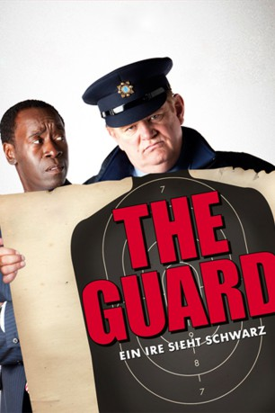

#466 The Guard - Ein Ire sieht schwarz
 
 IMDB-Wertung: 7.3 / 10
IMDB-Wertung: 7.3 / 10  Metascore: 78
Metascore: 78 
Sergeant Gerry Boyle ist ein Kleinstadt-Cop in Irland mit einer gewöhnungsbedürftigen Persönlichkeit, einem seltsamen Sinn für Humor, einer sterbenden Mutter und einem Hang zu Prostituierten. Da geht es ihm gewaltig gegen den Strich, dass plötzlich der FBI-Agent Wendell Everett in seine Routine hineinplatzt, um mit ihm gemeinsam gegen einen internationalen Drogenring zu ermitteln.
Jahr: 2011
Dauer: 96 Minuten
FSK: 16
Land: Irland Studio: Ascot Elite Entertainment GroupTonspuren: DTS - ,
Untertitel:
Auflösung: 1080p (1920x816) Größe: 6164 MB
Genre: Komödie, Krimi, Thriller
Regisseur: John Michael McDonagh
Drehbuch: John Michael McDonagh
Soundtrack: Calexico
Darsteller:
 Brendan Gleeson als Gerry Boyle
Brendan Gleeson als Gerry Boyle Rory Keenan als Aidan McBride
Rory Keenan als Aidan McBride Laurence Kinlan als Photographer
Laurence Kinlan als Photographer Liam Cunningham als Francis Sheehy-Skeffington
Liam Cunningham als Francis Sheehy-Skeffington- Owen Sharpe als Billy Devaney
 Fionnula Flanagan als Eileen Boyle
Fionnula Flanagan als Eileen Boyle- Wale Ojo als Doctor Oleyuwo
 Don Cheadle als FBI agent Wendell Everett
Don Cheadle als FBI agent Wendell Everett- Mark O'Halloran als Garda No. 1
 David Wilmot als Liam O'Leary
David Wilmot als Liam O'Leary Mark Strong als Clive Cornell
Mark Strong als Clive Cornell- Katarina Cas als Gabriela McBride
 Sarah Greene als Sinead Mulligan
Sarah Greene als Sinead Mulligan Dominique McElligott als Aoife O'Carroll
Dominique McElligott als Aoife O'Carroll- David Pearse als Bartley
- Giedrius Nagys als Henchman
 Alan Bates als Crossley in The Shout , archive footage, uncredited
Alan Bates als Crossley in The Shout , archive footage, uncredited- Ronan Collins als Young Man in Car
- Paraic Nialand als Young Man in Car
- John Patrick Beirne als Young Man in Car
- Liam O'Conghaile als Young Man in Car
- Christopher Kilmartin als Young Man in Car
- Declan Mannlen als James McCormick
- Michael Og Lane als Eugene Moloney
- Gary Lydon als Gerry Stanton
- Darren Healy als Jimmy Moody
- Conor Moloney als Detective
- Laura Hitchings als Female Garda
- Sharon Kearney als Woman at Bartley's House
- Dermot Healy als Old Farmer
- Eamonn Olwill als Priest
- Yuyang Sheilds als Diner Waitress
- Pat Shortt als Colum Hennessey
- Gay McKeon als Musician
- Mary Corcoran als Musician
- Colm Gannon als Musician
- Johnny McDonagh als Musician
- Dominick Hewitt als Henchman
- Gary Robinson als Henchman
Datei: X:\2011(G-M)\Guard - Ein Ire sieht schwarz, The (2011, FSK16, 1920x816).mkv seit 25.02.2015
Festplatte: HD 2011(G-Z)
 Es gibt insgesamt 100 Filme in der Gruppe '2011(G-M)'
Es gibt insgesamt 100 Filme in der Gruppe '2011(G-M)'